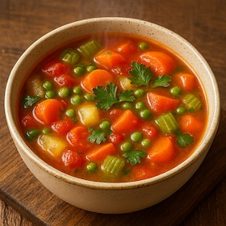
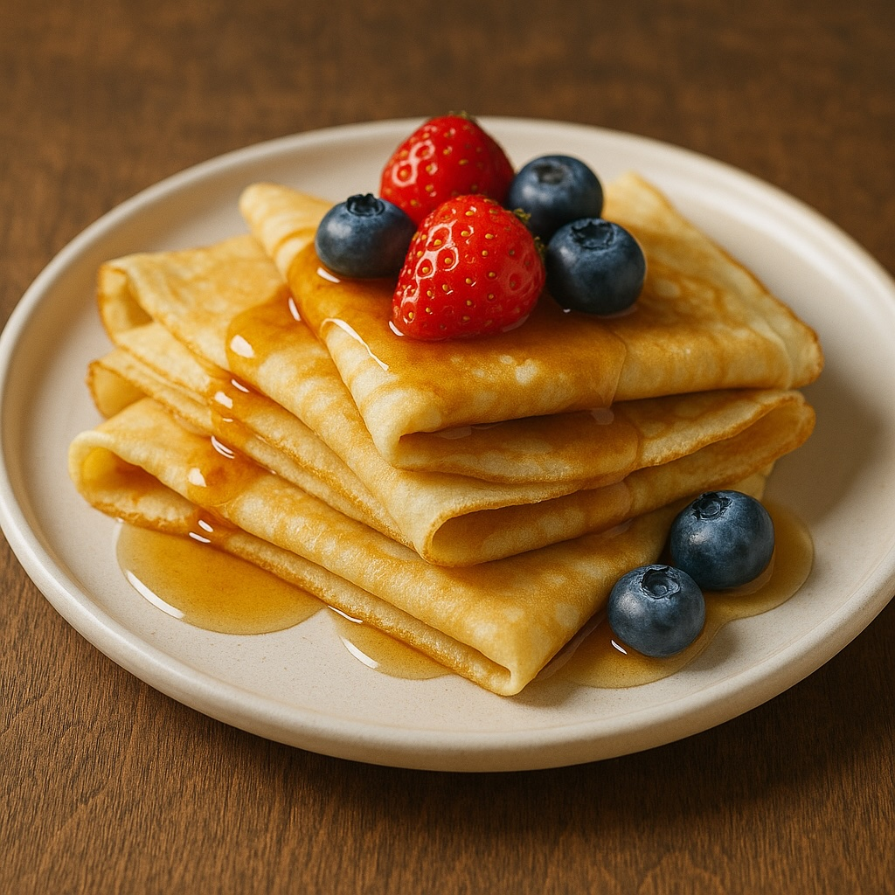

Горячий овощной суп
Насыщенный ароматный суп с картофелем, морковью, сельдереем и томатами. Идеально согреет в прохладный день!

Нежные блинчики
Тонкие ароматные блинчики на сливочном масле. Подаются с творогом и ягодами — отличный вариант для завтрака или десерта.